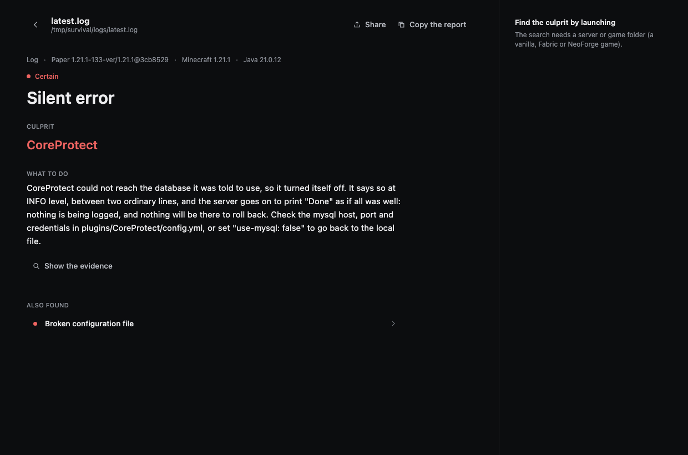
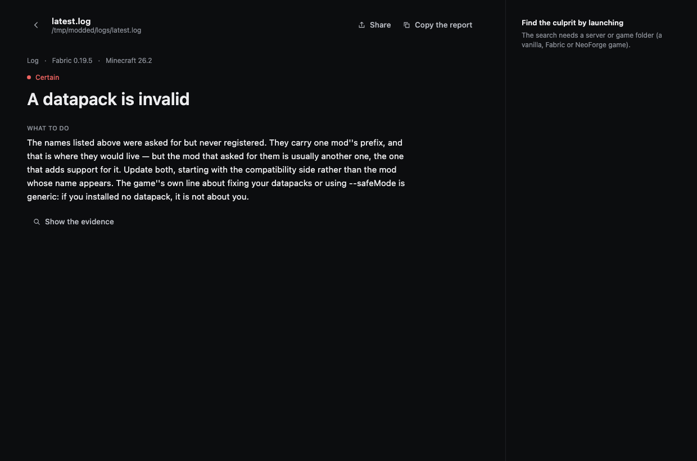

Reading a report
A report answers three questions, in order: what happened, who is responsible, what to do.

The header
Log · Paper 1.21.1-133 · Minecraft 1.21.1 · Java 21.0.12
What CrashSleuth worked out about your setup on its own: whether it read a log, a crash report or a whole folder, which server software, which Minecraft, which Java. If one of those is wrong, doubt everything under it — a wrong version here is usually the sign that you pointed it at the wrong folder.
Confidence
The coloured dot above the title. Four levels, each meaning something precise:
| Level | What it means |
|---|---|
| Certain | The log states it. There is nothing left to interpret. |
| High | One well-known message, read the way the people who wrote it meant it. |
| Medium | Consistent with the evidence, but another explanation exists. |
| Low | A lead, not an answer. Worth checking before acting on it. |
A Low finding is still shown, because knowing where to look is worth something. It is never dressed up as a conclusion.
The culprit
The mod, plugin, file or setting to change. This is the part most tools get wrong, so it is worth saying plainly what happens here.
The name in the log is usually the one that noticed, not the one at fault. A mixin that failed names the mod that lost the race. Could not pass event … to X names whoever registered the listener. Fabric's crash screen names the mod whose entrypoint happened to be running — one author ended up renaming his class to Crash_Is_Not_Caused_By_BetterClouds over it.
In each of those cases CrashSleuth looks past the loud name, reports the code that actually failed, says that it did, and names the other one second so you can still check it:
badoptimizationsis the code that actually failed. The loader's screen namesbettercloudsbecause the game was running its entrypoint at that moment, and that is the first and largest line people read: it is not a diagnosis.
When it genuinely cannot tell, it names nobody rather than picking someone.
What to do
The sentence that matters. It is written to be acted on without knowing what a mixin is, and it says why, so you can tell when it does not apply to you.
When the obvious fix would be wrong, it says so. Two real examples:
The database this plugin was told to use did not answer. The plugin is not at fault and updating it will change nothing: check the address, the port, the credentials […]
The method that is missing belongs to Java itself: this family arrived in Java 21. […] The mod named in the trace is where the call happens, not what is broken.
Show the evidence
The exact lines the conclusion rests on. Open it to check the reasoning — or when you are about to tell a mod author "your mod is broken" and want the line that proves it.
Turn on readable traces and obfuscated game code like class_310.method_22681 or fgo.b becomes Mojang's own names first, using mappings downloaded once.
Also found
Everything else, ordered by confidence. A second finding is not noise: a server can have a broken config and an outdated plugin, and the one that stopped it today is not always the one that will bite tomorrow.
In the screenshot above, Broken configuration file sits under the silent error — the same root cause seen from the other side.
A modded server

Same structure, different world. Here the server refused to start, every identifier in the error carried one mod's name — and that mod was not the one at fault. The advice says so, and says which one to look at first.
Taking it elsewhere
- Copy the report puts a plain-text version on the clipboard: ready for a Discord thread or a GitHub issue, with the environment, the finding and the evidence.
- Share turns the whole report into a link. How that works, and why nothing is uploaded →
- Find the culprit by launching is on the right when the folder can be started. What it does →